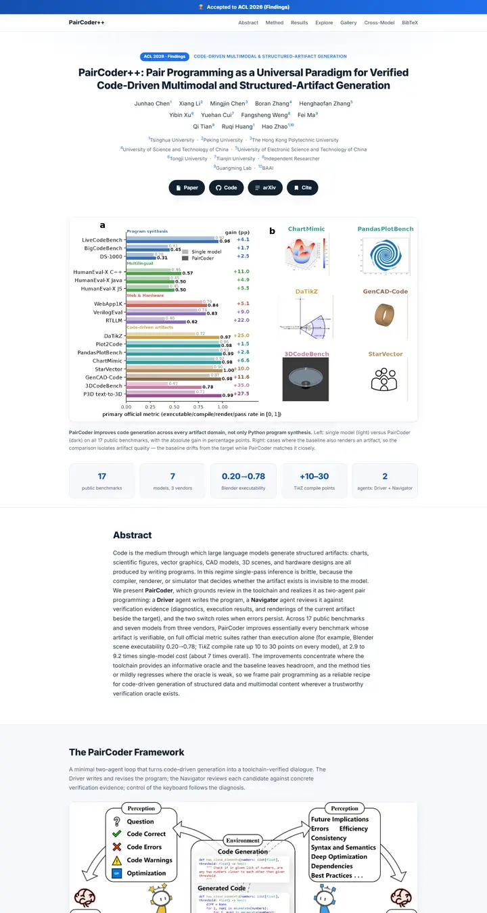

PairCoder++: Pair Programming as a Universal Paradigm for Verified Code-Driven Multimodal and Structured-Artifact Generation
A crisp white product page: a blue announcement strip, ink-black pill buttons and every figure on a soft-shadowed card.

Checked against the rendered page.
Why it is here
Clean modern template made its own: an announcement bar, a well-set hero, a framed two-panel results teaser, a stat-tile strip and a comfortable abstract measure. Tidy and professional.
Overview
Color Palette
Typography
Inter
PairCoder++: Pair Programming as a Universal Paradigm for Verified Cod
Abstract · Method · Results · BibTeX — 0123456789
JetBrains Mono
PairCoder++: Pair Programming as a Universal Paradigm for Verified Cod
Abstract · Method · Results · BibTeX — 0123456789
Spacing & Shape
Page Modules
Guidelines
More like this

CRAFT: Training-Free Cascaded Retrieval for Tabular QA
A tidy product manual in pale blueprint blue, where every stage wears its own colored edge.

Efficient Self-Evaluation for Diffusion Language Models via Sequence Regeneration
A tidy stack of rounded cards washed in a blue-violet-apricot dawn, signed with a gradient wordmark.

FIGMA: Towards FIne-Grained Music retrievAl
A music journal on warm paper: a heavy Newsreader headline under a red kicker, big red serif numerals for the results, and figures resting in soft cream frames.

GuideDog: A Real-World Egocentric Multimodal Dataset for Blind and Low-Vision Accessibility-Aware Guidance
A quiet monograph page: one serif column, oxblood ink for the links, and a table that blushes only at its own row.

LaMI: Augmenting Large Language Models via Late Multi-Image Fusion
A careful conference handout: Noto Serif headings, navy outlined buttons and soft grey bands taking turns.

PROGRESSLM: Towards Progress Reasoning in Vision-Language Models
A violet-to-ember dusk poster up top, then a plain Distill reading room below.